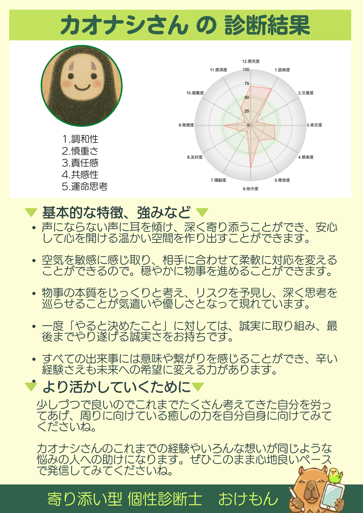

綺麗事じゃない言葉と
同じ場所で揺れている人を抱きしめて、
夜のキッチンで灯りを点ける、52歳の本音エッセイスト。
介護・夫婦・お金・自分のこと。
もう何かに「縛られてきた」あなたへ届く、一冊の灯り。
CHAPTER 01
まずは、お茶を一杯入れたぐらいの距離感で。
ここに書いてあるのは「ちゃんとした分析」じゃなくて、ふっと笑える、本音の方の話です。
カオナシさんは、「ちゃんとしなきゃ」で生きてきた人のためのことばを書く人です。 誰かに頼まれたわけじゃなく、自分が 「いい子の通知表」を破り捨てた夜 の手触りを覚えているから、 同じ場所で揺れている人に、夜のキッチンで灯りを点けるみたいに、ことばを差し出せる人。
義母の介護が、ある日ふいに始まって。夫が29年勤めた会社を辞めると言った夜、最初に思ったのは 「ずっと家にいるんか」 だったという、その正直さ。綺麗事じゃないところからしか書けないものを、 2025年6月から、毎日noteに綴ってきました。
Threadsで毎朝7時に灯される「介護友Threads」、梅田と神戸で毎月開かれるnoteオフ会、 ¥500/月のメンバーシップ「本音部屋」、¥1,480の有料マガジン「知らなかったじゃ済まない、介護とお金のこと」── 気づいたら、同じ夜を生きている人が集まる場所を、すでにいくつも作っていました。
この説明書は、そのカオナシさんに、おけもんから渡す「お疲れさま、いい灯りやね」の一冊です。
50代の本音。介護と夫婦のリアルを書く人
CHAPTER 02
コミュニケーションでの「いまの現在地」と、
人生をなめらかに動かしている 5つの資質 を、一枚の絵にしたものです。

寄り添い型 個性診断士 おけもん｜カオナシさん 診断結果
5つのうち、3つは「人間関係構築力」、2つは「実行力」。 前に出てぐいぐい引っ張る影響力も、ロジックで切り分ける戦略的思考力も、5位以内には入りません。 これは、よくある分布ではない、むしろ 少数派の、深い才能のかたち です。
言い換えると、カオナシさんは 「ことばを聴く人」「ことばで寄り添う人」。 派手にバズらせるんじゃなくて、本音の灯りで一人ひとりを照らす のが、いちばん自然な動き方。 ──だからnoteの読者さんは、ハウツーじゃない、誰かの本音を求めて集まってきます。
CHAPTER 03
「こういう時、自然と灯りがつく」と「こういう時、ろうそくが消えそうになる」──
その輪郭を、はっきりさせておきましょう。
1日2日経ってから、ようやく「私こう思ってたんや」って言葉になる。 それは 「遅い」のではなく、心の奥のいちばん正直な層から、ちゃんと言葉を引き上げている 時間です。
即興の喋りで返さなくていい。夜のキッチンで、お茶を一杯入れて、note に書く速度。 その速度こそが、ハウツーじゃない、本音の灯りを求めて集まってくる読者さんが待っているものです。
CHAPTER 04
カオナシさんの中で、自然に動いている 5つの灯り。
すでに毎日のnoteやThreadsの、ひと文字ひと文字に宿っている力です。
意見の対立より、合意点に自然と目が向く資質。 誰かと誰かの間にそっと立って、空気をなめらかにする──カオナシさんは、職場でもオフ会でも家族の中でも、 気づいたら自分がそのポジションだった、と振り返れる人です。「自分を出さないからこそできた」 っていうあのフレーズは、調和性が中心に据えてきた価値そのもの。
子育てサークルで、ママ4〜5人と一緒にイベントを作っていった時間。 「失敗しても成功しても、みんなでやったよねっていうのが、すごいい経験やったな」── ──このフレーズが出てくる人は、調和性の使い手にしかいません。 いまnoteオフ会で同年代のママと「お茶飲む感じ」を作っているのも、その続きです。
動き出す前に、リスクと意味を見届けたい 資質。 「なんとなく」ではなく「自分が腑に落ちる」を大事にするから、ことばになるまでも、決断するまでも、 丁寧な時間を使います。「言語化に1〜2日かかる」のは、奥の本当の声を待ってあげているから。 その慎重さがあるからこそ、書かれた言葉は、誰かの「わかる」になります。
義母の介護のこと、お金のこと、施設選びのこと──書く前にしっかり調べて、自分で確かめてから出す。 だから有料マガジン 「知らなかったじゃ済まない、介護とお金のこと」は、ふわっとした体験談じゃなく、 「老人ホーム選びで失敗した判断軸」「親の資産、最初に確認したこと」のような、 実体験ベースの読者の指針になっています。慎重さは、読者にとっての安心の地面です。
一度「やる」と決めたことを、誠実にやり遂げる資質。 2025年6月のnote開設から、もうすぐ1年。Threadsは毎朝7時、「介護友Threads」を絶やしたことがない。 この継続そのものが、責任感が静かに灯し続けている火です。「人生でこれだけ継続して頑張ったことはないかも」 ──その実感の裏には、誰よりも長く約束を守ってきた手応えがあります。
子育て支援施設のお仕事を「辞めます」と一度伝えたあとに、引き止めに応じて「1年続けます」と返した夜。 責任感は、人との約束を守る力でもあるけれど、これからは「自分との約束」を、 静かに大きくしていく季節。「ちゃんと自分で決めましたって言って辞めたい」── その願いを叶える力も、すでに本人の中にあります。
相手の感情を、自分の中でも一度感じてみる資質。 子育て支援施設で、しんどそうな顔のママに声をかけて、ポロポロと悩みが出てくるあの時間。 Threadsの介護友コミュニティで、誰かの本音に「わかります」とそっと返している時。 ──共感性は、「答え」じゃなく「ここに居ていいよ」を渡す力です。
義母の介護で、夫のお兄さんとのやり取りを観察しながら、「この人、やばそう」と先回りでフォローに入れたこと。 見えないリスクや空気の濁りを、肌感覚でキャッチするセンサー。 そして何年か後に、子育てセンターで関わったママが 「保育士の資格を取りました」と わざわざ報告に来てくれた瞬間──共感性は、長い時間をかけて、誰かの人生を確かに動かす力です。
過去・今・未来を、ひとつのつながりとして眺められる資質。 「全部の経験には意味がある」「ここで出会ったのもご縁だな」を、頭ではなく 細胞レベルで信じている 人が持つ感覚。 「絶対なんかあるからこうなってる」──その肌感覚が、辛かった介護の時間さえ、 誰かの希望の灯りに編み直す力になります。
ある日ふと耳にしたYouTubeで両学長と出会って、「目的のない貯金」だった洗脳が解けたあの夜。 そこから2年半でnote開設、メンバーシップ、有料マガジン、noteオフ会の主宰へ── 点が線になる物語を、自分の手で編んでいける人。好きなアニメは「もちろん」千と千尋の神隠し。 「カオナシ」というハンドルを選んだのも、運命思考の人らしい、自分の物語への深い納得です。
CHAPTER 05
カオナシさんは、これから何かを「やりたい」段階の人じゃありません。
もう毎日、灯りを点けて、人を呼んでいる側の人です。
2025年6月にnoteを始めて1年。「人生でこれだけ継続して頑張ったことはないかも」と ご本人が書いていた言葉が、いまの数字に静かに刻まれています。
「稼げや祭り」をきっかけに踏み出して、気づいたら 「ここがゴールだと思ったけど、まさかのスタートだ」 ──そう書ける場所にもう来ている人。これからのカオナシさんは、「何を始めるか」じゃなく、 「すでに灯りを求めて集まってきている人たちに、何を渡していくか」のフェーズです。
¥1,480の有料マガジン「知らなかったじゃ済まない、介護とお金のこと」、リベシティ スキルマーケットの 「note発信サポート」── すでに対価をいただいて伴走している伴走者 として、 この取扱説明書は、その背中をそっとあたためる一冊として置いておきます。
CHAPTER 06
2025年7月のセッションから、もうすぐ1年。
あの夜、カオナシさんがふっと口にした言葉を、いまの自分にも届くように置いておきます。
1日2日経ってから、ようやくことばが出てくるカオナシさん。 その「間」こそが、即興のSNS言葉と一線を画す、本音の深さ。 焦らず、その速度のままnoteに灯していけば大丈夫です。
仕事も、これまでの「ちゃんとしなきゃ」も、いっぺんに脱がなくていい。 「使う時間の10%だけ入れ替える」。それがカオナシさんの慎重さと相性のいい速度。 いまその10%をnoteに置いている、その流れがすでに正解です。
50代でnoteを始めた──「もう遅い」と思いそうな世間の常識をくつがえして、 「経験してきた人だから聞きたい」と読者が集まってくる事実が、すでに証明済み。 『もう50代？まだ50代。』というご自身のnoteタイトルが、いちばんの答えです。
義母の介護、夫の単身赴任、自分の老い、子どもの巣立ち。 50代女性の見えにくいテーマを、しかも綺麗事なしで書ける書き手は、まだまだ少数派。 カオナシさんの言葉を、夜のキッチンで待っている人が、必ずいます。
セッションの終盤、カオナシさんがふっと口にしたこの言葉。 「自分のスタンダードな部分は変わらないかもしれない。でも、やり方や考え方で、 ちょっと変化することで、生きやすくなる方法がきっとある」── この一行が、これからのカオナシさんの note の、メンバーシップの、Threadsの、 いちばん奥の通奏低音になっていきます。
— CATCH COPY —
派手な祭りじゃない。でも、夜になると、誰かが灯りを頼って帰ってくる。
カオナシさんは、そういう静かな場所を、これからも自分の手で点していく人です。
CHAPTER 07
一度に全部、考えなくて大丈夫。
ふと思い出した夜に、お茶を一杯入れて、ひとつだけ眺めてみてください。